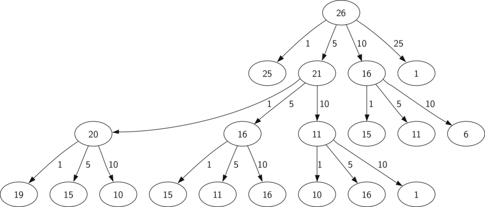

In the previous sections we looked at some problems that are relatively easy to solve, and some graphically interesting problems that can help us gain a mental model of what is happening in a recursive algorithm. In this section we will look at some problems that are really difficult to solve using an iterative programming style but are very elegant and easy to solve using recursion. We will finish up by looking at a deceptive problem that at first looks like it has an elegant recursive solution but in fact does not.
The Tower of Hanoi puzzle was invented by the French mathematician Edouard Lucas in 1883. He was inspired by a legend that tells of a Hindu temple where the puzzle was presented to young priests. At the beginning of time, the priests were given three poles and a stack of 64 gold disks, each disk a little smaller than the one beneath it. Their assignment was to transfer all 64 disks from one of the three poles to another, with two important constraints. They could only move one disk at a time, and they could never place a larger disk on top of a smaller one. The priests worked very efficiently, day and night, moving one disk every second. When they finished their work, the legend said, the temple would crumble into dust and the world would vanish.
Although the legend is interesting, you need not worry about the world ending any time soon. The number of moves required to correctly move a tower of 64 disks is \(2^{64}-1 = 18,446,744,073,709,551,615\). At a rate of one move per second, that is \(584,942,417,355\) years! Clearly there is more to this puzzle than meets the eye.
Figure 1 shows an example of a configuration of disks in the middle of a move from the first peg to the third. Notice that, as the rules specify, the disks on each peg are stacked so that smaller disks are always on top of the larger disks. If you have not tried to solve this puzzle before, you should try it now. You do not need fancy disks and poles–a pile of books or pieces of paper will work.

An Example Arrangement of Disks for the Tower of Hanoi
How do we go about solving this problem recursively? How would you go about solving this problem at all? What is our base case? Let’s think about this problem from the bottom up. Suppose you have a tower of five disks, originally on peg one. If you already knew how to move a tower of four disks to peg two, you could then easily move the bottom disk to peg three, and then move the tower of four from peg two to peg three. But what if you do not know how to move a tower of height four? Suppose that you knew how to move a tower of height three to peg three; then it would be easy to move the fourth disk to peg two and move the three from peg three on top of it. But what if you do not know how to move a tower of three? How about moving a tower of two disks to peg two and then moving the third disk to peg three, and then moving the tower of height two on top of it? But what if you still do not know how to do this? Surely you would agree that moving a single disk to peg three is easy enough, trivial you might even say. This sounds like a base case in the making.
Here is a high-level outline of how to move a tower from the starting pole, to the goal pole, using an intermediate pole:
As long as we always obey the rule that the larger disks remain on the bottom of the stack, we can use the three steps above recursively, treating any larger disks as though they were not even there. The only thing missing from the outline above is the identification of a base case. The simplest Tower of Hanoi problem is a tower of one disk. In this case, we need move only a single disk to its final destination. A tower of one disk will be our base case. In addition, the steps outlined above move us toward the base case by reducing the height of the tower in steps 1 and 3. Listing 1 shows the Python code to solve the Tower of Hanoi puzzle.
def moveTower(height,fromPole, toPole, withPole):
if height >= 1:
moveTower(height-1,fromPole,withPole,toPole)
moveDisk(fromPole,toPole)
moveTower(height-1,withPole,toPole,fromPole)
Notice that the code in Listing 1 is almost identical to the English description. The key to the simplicity of the algorithm is that we make two different recursive calls, one on line 3 and a second on line 5. On line 3 we move all but the bottom disk on the initial tower to an intermediate pole. The next line simply moves the bottom disk to its final resting place. Then on line 5 we move the tower from the intermediate pole to the top of the largest disk. The base case is detected when the tower height is 0; in this case there is nothing to do, so the moveTower function simply returns. The important thing to remember about handling the base case this way is that simply returning from moveTower is what finally allows the moveDisk function to be called.
The function moveDisk, shown in Listing 2, is very simple. All it does is print out that it is moving a disk from one pole to another. If you type in and run the moveTower program you can see that it gives you a very efficient solution to the puzzle.
def moveDisk(fp,tp):
print("moving disk from",fp,"to",tp)
The following activecode program provides the entire solution for three disks.
(hanoi)
Now that you have seen the code for both moveTower and moveDisk, you may be wondering why we do not have a data structure that explicitly keeps track of what disks are on what poles. Here is a hint: if you were going to explicitly keep track of the disks, you would probably use three Stack objects, one for each pole. The answer is that Python provides the stacks that we need implicitly through the call stack, just like it did in the toStr problem.
In this section we will look at a problem that has relevance to the expanding world of robotics, finding your way out of a maze. If you have a Roomba vacuum cleaner for your dorm room (don’t all college students?) you will wish that you could reprogram it using what you have learned in this section. The problem we want to solve is to help our turtle find its way out of a virtual maze. The maze problem has roots as deep as the Greek myth about Theseus who was sent into a maze to kill the minotaur. Theseus used a ball of thread to help him find his way back out again once he had finished off the beast. In our problem we will assume that our turtle is dropped down somewhere into the middle of the maze and must find its way out. Look at Figure 3 to get an idea of where we are going in this section.

The Finished Maze Search Program
To make it easier for us we will assume that our maze is divided up into “squares.” Each square of the maze is either open or occupied by a section of wall. The turtle can only pass through the open squares of the maze. If the turtle bumps into a wall it must try a different direction. The turtle will require a systematic procedure to find its way out of the maze. Here is the procedure:
Now, that sounds pretty easy, but there are a couple of details to talk about first. Suppose we take our first recursive step by going North. By following our procedure our next step would also be to the North. But if the North is blocked by a wall we must look at the next step of the procedure and try going to the South. Unfortunately that step to the south brings us right back to our original starting place. If we apply the recursive procedure from there we will just go back one step to the North and be in an infinite loop. So, we must have a strategy to remember where we have been. In this case we will assume that we have a bag of bread crumbs we can drop along our way. If we take a step in a certain direction and find that there is a bread crumb already on that square, we know that we should immediately back up and try the next direction in our procedure. As we will see when we look at the code for this algorithm, backing up is as simple as returning from a recursive function call.
As we do for all recursive algorithms let us review the base cases. Some of them you may already have guessed based on the description in the previous paragraph. In this algorithm, there are four base cases to consider:
For our program to work we will need to have a way to represent the maze. To make this even more interesting we are going to use the turtle module to draw and explore our maze so we can watch this algorithm in action. The maze object will provide the following methods for us to use in writing our search algorithm:
The Maze class also overloads the index operator [] so that our algorithm can easily access the status of any particular square.
Let’s examine the code for the search function which we call searchFrom. The code is shown in Listing 3. Notice that this function takes three parameters: a maze object, the starting row, and the starting column. This is important because as a recursive function the search logically starts again with each recursive call.
def searchFrom(maze, startRow, startColumn):
maze.updatePosition(startRow, startColumn)
# Check for base cases:
# 1. We have run into an obstacle, return false
if maze[startRow][startColumn] == OBSTACLE :
return False
# 2. We have found a square that has already been explored
if maze[startRow][startColumn] == TRIED:
return False
# 3. Success, an outside edge not occupied by an obstacle
if maze.isExit(startRow,startColumn):
maze.updatePosition(startRow, startColumn, PART_OF_PATH)
return True
maze.updatePosition(startRow, startColumn, TRIED)
# Otherwise, use logical short circuiting to try each
# direction in turn (if needed)
found = searchFrom(maze, startRow-1, startColumn) or \
searchFrom(maze, startRow+1, startColumn) or \
searchFrom(maze, startRow, startColumn-1) or \
searchFrom(maze, startRow, startColumn+1)
if found:
maze.updatePosition(startRow, startColumn, PART_OF_PATH)
else:
maze.updatePosition(startRow, startColumn, DEAD_END)
return found
As you look through the algorithm you will see that the first thing the code does (line 2) is call updatePosition. This is simply to help you visualize the algorithm so that you can watch exactly how the turtle explores its way through the maze. Next the algorithm checks for the first three of the four base cases: Has the turtle run into a wall (line 5)? Has the turtle circled back to a square already explored (line 8)? Has the turtle found an exit (line 11)? If none of these conditions is true then we continue the search recursively.
You will notice that in the recursive step there are four recursive calls to searchFrom. It is hard to predict how many of these recursive calls will be used since they are all connected by or statements. If the first call to searchFrom returns True then none of the last three calls would be needed. You can interpret this as meaning that a step to (row-1,column) (or North if you want to think geographically) is on the path leading out of the maze. If there is not a good path leading out of the maze to the North then the next recursive call is tried, this one to the South. If South fails then try West, and finally East. If all four recursive calls return false then we have found a dead end. You should download or type in the whole program and experiment with it by changing the order of these calls.
The code for the Maze class is shown in Listing 4, Listing 5, and Listing 6. The __init__ method takes the name of a file as its only parameter. This file is a text file that represents a maze by using “+” characters for walls, spaces for open squares, and the letter “S” to indicate the starting position. Figure 4 is an example of a maze data file. The internal representation of the maze is a list of lists. Each row of the mazelist instance variable is also a list. This secondary list contains one character per square using the characters described above. For the data file in Figure 4 the internal representation looks like the following:
[ ['+','+','+','+',...,'+','+','+','+','+','+','+'],
['+',' ',' ',' ',...,' ',' ',' ','+',' ',' ',' '],
['+',' ','+',' ',...,'+','+',' ','+',' ','+','+'],
['+',' ','+',' ',...,' ',' ',' ','+',' ','+','+'],
['+','+','+',' ',...,'+','+',' ','+',' ',' ','+'],
['+',' ',' ',' ',...,'+','+',' ',' ',' ',' ','+'],
['+','+','+','+',...,'+','+','+','+','+',' ','+'],
['+',' ',' ',' ',...,'+','+',' ',' ','+',' ','+'],
['+',' ','+','+',...,' ',' ','+',' ',' ',' ','+'],
['+',' ',' ',' ',...,' ',' ','+',' ','+','+','+'],
['+','+','+','+',...,'+','+','+',' ','+','+','+']]
The drawMaze method uses this internal representation to draw the initial view of the maze on the screen, see Figure 3.
++++++++++++++++++++++ + + ++ ++ + + + + +++ + ++ + + + ++ ++++ + ++ +++ ++++++ +++ + + + ++ ++ + +++++ ++++++ +++++ + + + +++++++ + + + +++++++ S + + + + +++ ++++++++++++++++++ +++An Example Maze Data File
The updatePosition method, as shown in Listing 5 uses the same internal representation to see if the turtle has run into a wall. It also updates the internal representation with a “.” or “-” to indicate that the turtle has visited a particular square or if the square is part of a dead end. In addition, the updatePosition method uses two helper methods, moveTurtle and dropBreadCrumb, to update the view on the screen.
Finally, the isExit method uses the current position of the turtle to test for an exit condition. An exit condition is whenever the turtle has navigated to the edge of the maze, either row zero or column zero, or the far right column or the bottom row.
class Maze:
def __init__(self,mazeFileName):
rowsInMaze = 0
columnsInMaze = 0
self.mazelist = []
mazeFile = open(mazeFileName,'r')
rowsInMaze = 0
for line in mazeFile:
rowList = []
col = 0
for ch in line[:-1]:
rowList.append(ch)
if ch == 'S':
self.startRow = rowsInMaze
self.startCol = col
col = col + 1
rowsInMaze = rowsInMaze + 1
self.mazelist.append(rowList)
columnsInMaze = len(rowList)
self.rowsInMaze = rowsInMaze
self.columnsInMaze = columnsInMaze
self.xTranslate = -columnsInMaze/2
self.yTranslate = rowsInMaze/2
self.t = Turtle(shape='turtle')
setup(width=600,height=600)
setworldcoordinates(-(columnsInMaze-1)/2-.5,
-(rowsInMaze-1)/2-.5,
(columnsInMaze-1)/2+.5,
(rowsInMaze-1)/2+.5)
def drawMaze(self):
for y in range(self.rowsInMaze):
for x in range(self.columnsInMaze):
if self.mazelist[y][x] == OBSTACLE:
self.drawCenteredBox(x+self.xTranslate,
-y+self.yTranslate,
'tan')
self.t.color('black','blue')
def drawCenteredBox(self,x,y,color):
tracer(0)
self.t.up()
self.t.goto(x-.5,y-.5)
self.t.color('black',color)
self.t.setheading(90)
self.t.down()
self.t.begin_fill()
for i in range(4):
self.t.forward(1)
self.t.right(90)
self.t.end_fill()
update()
tracer(1)
def moveTurtle(self,x,y):
self.t.up()
self.t.setheading(self.t.towards(x+self.xTranslate,
-y+self.yTranslate))
self.t.goto(x+self.xTranslate,-y+self.yTranslate)
def dropBreadcrumb(self,color):
self.t.dot(color)
def updatePosition(self,row,col,val=None):
if val:
self.mazelist[row][col] = val
self.moveTurtle(col,row)
if val == PART_OF_PATH:
color = 'green'
elif val == OBSTACLE:
color = 'red'
elif val == TRIED:
color = 'black'
elif val == DEAD_END:
color = 'red'
else:
color = None
if color:
self.dropBreadcrumb(color)
def isExit(self,row,col):
return (row == 0 or
row == self.rowsInMaze-1 or
col == 0 or
col == self.columnsInMaze-1 )
def __getitem__(self,idx):
return self.mazelist[idx]
The complete program is given below as an activecode example. This program uses the data file maze2.txt shown below. Note that it is a much more simple example file in that the exit is very close to the starting position of the turtle.
++++++++++++++++++++++
+ + ++ ++ +
+ ++++++++++
+ + ++ ++++ +++ ++
+ + + + ++ +++ +
+ ++ ++ + +
+++++ + + ++ + +
+++++ +++ + + ++ +
+ + + S+ + +
+++++ + + + + + +
++++++++++++++++++++++
(completemaze)
Many programs in computer science are written to optimize some value; for example, find the shortest path between two points, find the line that best fits a set of points, or find the smallest set of objects that satisfies some criteria. There are many strategies that computer scientists use to solve these problems. One of the goals of this book is to expose you to several different problem solving strategies. Dynamic programming is one strategy for these types of optimization problems.
A classic example of an optimization problem involves making change using the fewest coins. Suppose you are a programmer for a vending machine manufacturer. Your company wants to streamline effort by giving out the fewest possible coins in change for each transaction. Suppose a customer puts in a dollar bill and purchases an item for 37 cents. What is the smallest number of coins you can use to make change? The answer is six coins: two quarters, one dime, and three pennies. How did we arrive at the answer of six coins? We start with the largest coin in our arsenal (a quarter) and use as many of those as possible, then we go to the next lowest coin value and use as many of those as possible. This first approach is called a greedy method because we try to solve as big a piece of the problem as possible right away.
The greedy method works fine when we are using U.S. coins, but suppose that your company decides to deploy its vending machines in Lower Elbonia where, in addition to the usual 1, 5, 10, and 25 cent coins they also have a 21 cent coin. In this instance our greedy method fails to find the optimal solution for 63 cents in change. With the addition of the 21 cent coin the greedy method would still find the solution to be six coins. However, the optimal answer is three 21 cent pieces.
Let’s look at a method where we could be sure that we would find the optimal answer to the problem. Since this section is about recursion, you may have guessed that we will use a recursive solution. Let’s start with identifying the base case. If we are trying to make change for the same amount as the value of one of our coins, the answer is easy, one coin.
If the amount does not match we have several options. What we want is the minimum of a penny plus the number of coins needed to make change for the original amount minus a penny, or a nickel plus the number of coins needed to make change for the original amount minus five cents, or a dime plus the number of coins needed to make change for the original amount minus ten cents, and so on. So the number of coins needed to make change for the original amount can be computed according to the following:
The algorithm for doing what we have just described is shown in Listing 7. In line 3 we are checking our base case; that is, we are trying to make change in the exact amount of one of our coins. If we do not have a coin equal to the amount of change, we make recursive calls for each different coin value less than the amount of change we are trying to make. Line 6 shows how we filter the list of coins to those less than the current value of change using a list comprehension. The recursive call also reduces the total amount of change we need to make by the value of the coin selected. The recursive call is made in line 7. Notice that on that same line we add 1 to our number of coins to account for the fact that we are using a coin. Just adding 1 is the same as if we had made a recursive call asking where we satisfy the base case condition immediately.
def recMC(coinValueList,change):
minCoins = change
if change in coinValueList:
return 1
else:
for i in [c for c in coinValueList if c <= change]:
numCoins = 1 + recMC(coinValueList,change-i)
if numCoins < minCoins:
minCoins = numCoins
return minCoins
print(recMC([1,5,10,25],63))
The trouble with the algorithm in Listing 7 is that it is extremely inefficient. In fact, it takes 67,716,925 recursive calls to find the optimal solution to the 4 coins, 63 cents problem! To understand the fatal flaw in our approach look at Figure 5, which illustrates a small fraction of the 377 function calls needed to find the optimal set of coins to make change for 26 cents.
Each node in the graph corresponds to a call to recMC. The label on the node indicates the amount of change for which we are computing the number of coins. The label on the arrow indicates the coin that we just used. By following the graph we can see the combination of coins that got us to any point in the graph. The main problem is that we are re-doing too many calculations. For example, the graph shows that the algorithm would recalculate the optimal number of coins to make change for 15 cents at least three times. Each of these computations to find the optimal number of coins for 15 cents itself takes 52 function calls. Clearly we are wasting a lot of time and effort recalculating old results.
Call Tree for Listing 7
The key to cutting down on the amount of work we do is to remember some of the past results so we can avoid recomputing results we already know. A simple solution is to store the results for the minimum number of coins in a table when we find them. Then before we compute a new minimum, we first check the table to see if a result is already known. If there is already a result in the table, we use the value from the table rather than recomputing. Listing 8 shows a modified algorithm to incorporate our table lookup scheme.
(lst_change2)
Notice that in line 6 we have added a test to see if our table contains the minimum number of coins for a certain amount of change. If it does not, we compute the minimum recursively and store the computed minimum in the table. Using this modified algorithm reduces the number of recursive calls we need to make for the four coin, 63 cent problem to 221 calls!
Although the algorithm in Listing 8 is correct, it looks and feels like a bit of a hack. Also, if we look at the knownResults lists we can see that there are some holes in the table. In fact the term for what we have done is not dynamic programming but rather we have improved the performance of our program by using a technique known as “memoization,” or more commonly called “caching.”
A truly dynamic programming algorithm will take a more systematic approach to the problem. Our dynamic programming solution is going to start with making change for one cent and systematically work its way up to the amount of change we require. This guarantees us that at each step of the algorithm we already know the minimum number of coins needed to make change for any smaller amount.
Let’s look at how we would fill in a table of minimum coins to use in making change for 11 cents. Figure 6 illustrates the process. We start with one cent. The only solution possible is one coin (a penny). The next row shows the minimum for one cent and two cents. Again, the only solution is two pennies. The fifth row is where things get interesting. Now we have two options to consider, five pennies or one nickel. How do we decide which is best? We consult the table and see that the number of coins needed to make change for four cents is four, plus one more penny to make five, equals five coins. Or we can look at zero cents plus one more nickel to make five cents equals 1 coin. Since the minimum of one and five is one we store 1 in the table. Fast forward again to the end of the table and consider 11 cents. Figure 7 shows the three options that we have to consider:
Either option 1 or 3 will give us a total of two coins which is the minimum number of coins for 11 cents.

Minimum Number of Coins Needed to Make Change

Three Options to Consider for the Minimum Number of Coins for Eleven Cents
Listing 9 is a dynamic programming algorithm to solve our change-making problem. dpMakeChange takes three parameters: a list of valid coin values, the amount of change we want to make, and a list of the minimum number of coins needed to make each value. When the function is done minCoins will contain the solution for all values from 0 to the value of change.
def dpMakeChange(coinValueList,change,minCoins):
for cents in range(change+1):
coinCount = cents
for j in [c for c in coinValueList if c <= cents]:
if minCoins[cents-j] + 1 < coinCount:
coinCount = minCoins[cents-j]+1
minCoins[cents] = coinCount
return minCoins[change]
Note that dpMakeChange is not a recursive function, even though we started with a recursive solution to this problem. It is important to realize that just because you can write a recursive solution to a problem does not mean it is the best or most efficient solution. The bulk of the work in this function is done by the loop that starts on line 4. In this loop we consider using all possible coins to make change for the amount specified by cents. Like we did for the 11 cent example above, we remember the minimum value and store it in our minCoins list.
Although our making change algorithm does a good job of figuring out the minimum number of coins, it does not help us make change since we do not keep track of the coins we use. We can easily extend dpMakeChange to keep track of the coins used by simply remembering the last coin we add for each entry in the minCoins table. If we know the last coin added, we can simply subtract the value of the coin to find a previous entry in the table that tells us the last coin we added to make that amount. We can keep tracing back through the table until we get to the beginning.
Listing 10 shows the dpMakeChange algorithm modified to keep track of the coins used, along with a function printCoins that walks backward through the table to print out the value of each coin used. This shows the algorithm in action solving the problem for our friends in Lower Elbonia. The first two lines of main set the amount to be converted and create the list of coins used. The next two lines create the lists we need to store the results. coinsUsed is a list of the coins used to make change, and coinCount is the minimum number of coins used to make change for the amount corresponding to the position in the list.
Notice that the coins we print out come directly from the coinsUsed array. For the first call we start at array position 63 and print 21. Then we take \(63 - 21 = 42\) and look at the 42nd element of the list. Once again we find a 21 stored there. Finally, element 21 of the array also contains 21, giving us the three 21 cent pieces.
(lst_dpremember)